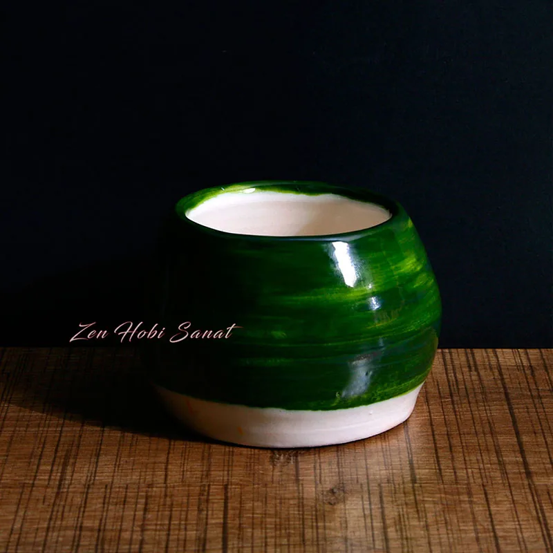
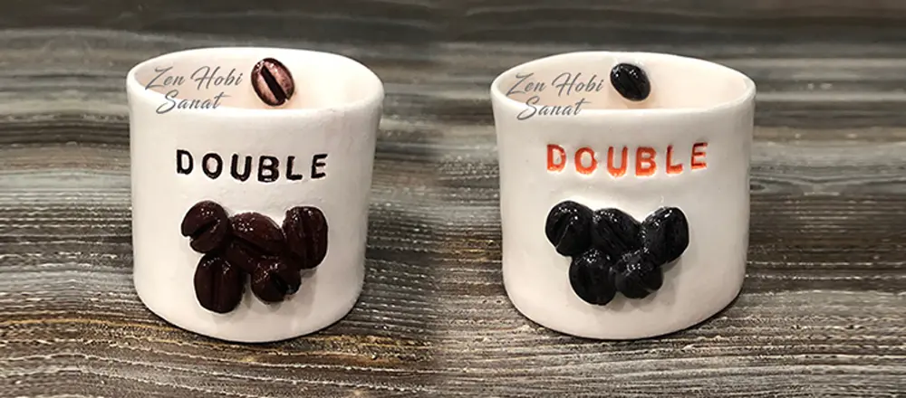
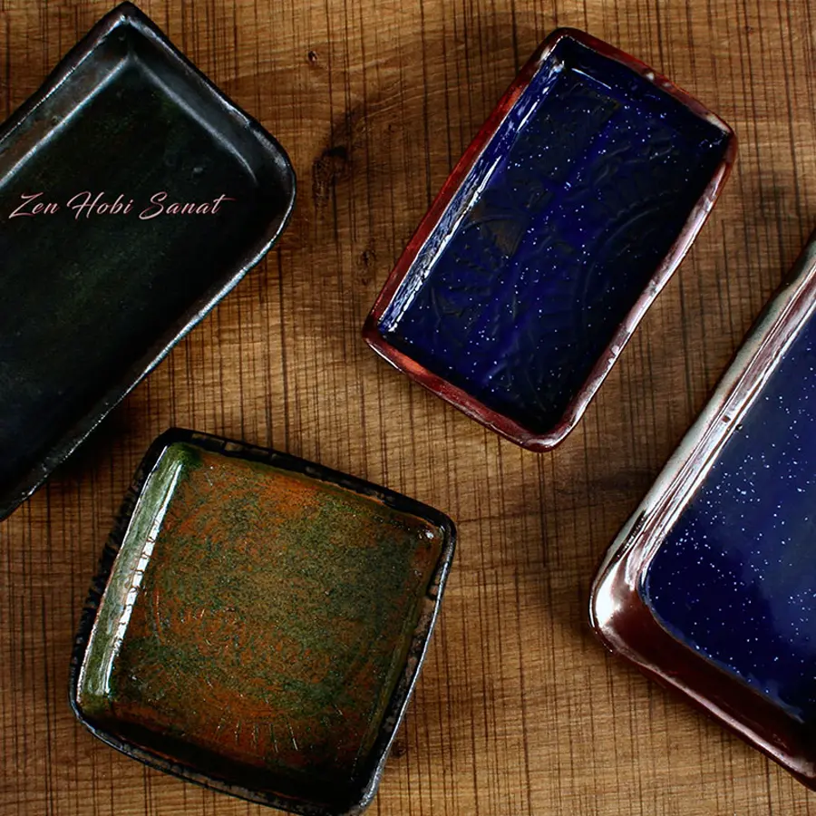
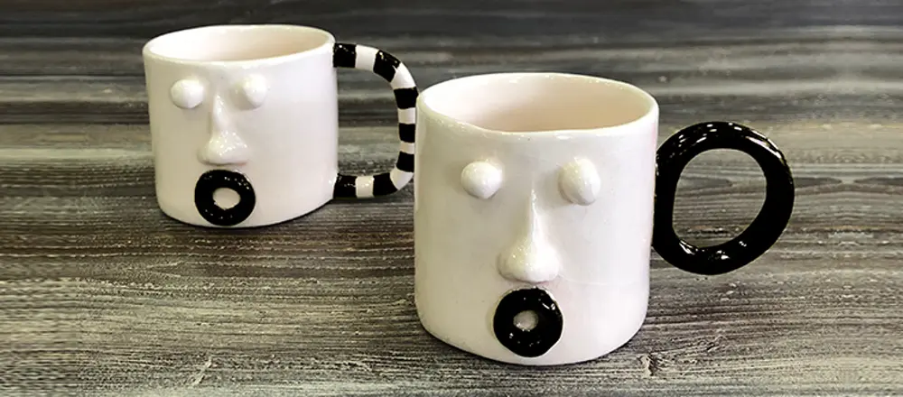
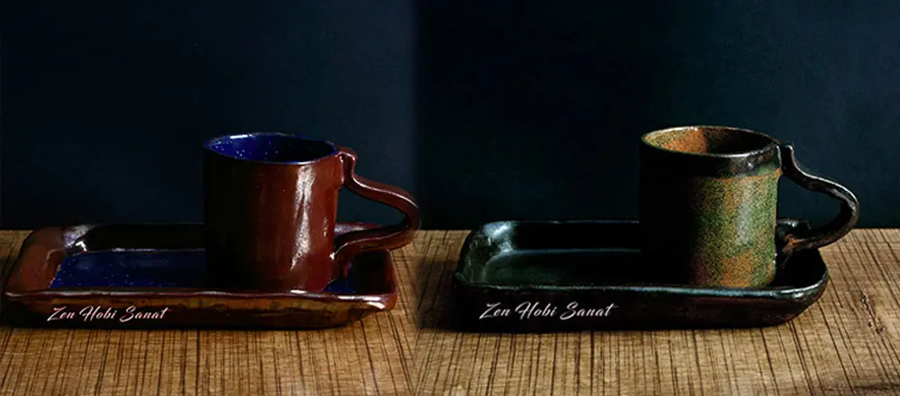
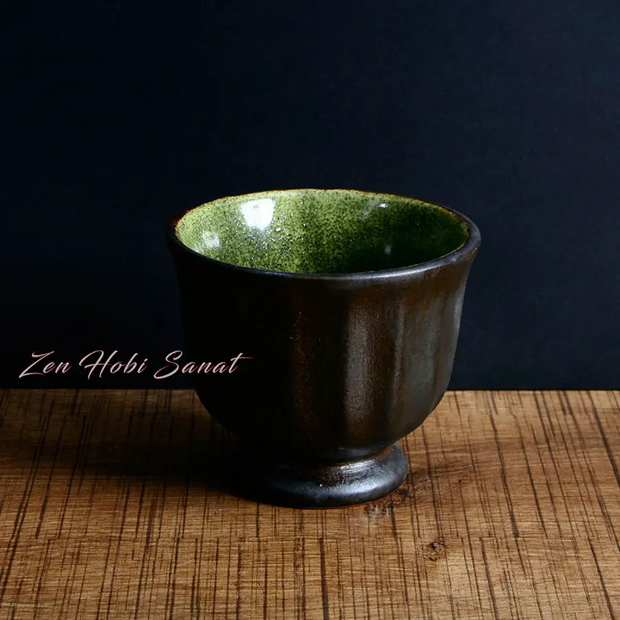

Ages 4+
Ages 4+
Creative Kids Studio
Ceramics, painting and sculpture combined into a foundational art program. Fun, productive studio hours that nurture children's imagination.
ExploreFrom ceramics to painting, sculpture to pouring art… a warm studio where adults and children alike can happily learn and create. From the pace of the city to the calm of clay.


Zen Hobi Sanat was founded to let you step away from the pace of the city and experience the peace of creating something with your own hands. In our studio in Bahçeşehir, you'll learn and enjoy every session alongside professional instructors.
Creating here is a kind of therapy. You use clay, paint and patience as tools to slow your mind down.
Focusing on work made by hand is a genuine break — one that eases anxiety, keeps you in the present, and frees the creativity within you. Most people come for a hobby and leave with a ritual that truly does them good. What's more, our kids' studios are planned together with an expert neuropsychologist.
Each one is its own world. Whether you focus on a single craft or try them all, we're with you from beginner to advanced level.
Ages 4+
Ceramics, painting and sculpture combined into a foundational art program. Fun, productive studio hours that nurture children's imagination.
Explore






Most LovedHand-building, shaping, glazing and firing. Make your own mug, bowl or vase from scratch — our studio's most popular discipline.
Explore


Hand-building, glazing and firing… A ceramics studio with a flexible schedule where adults can happily learn and create. Make your own mug, bowl or vase from scratch.
Explore


Bring your own painting to life from scratch with acrylics. An enjoyable, step-by-step painting studio for adults.
ExploreBring your objects to life with decorative painting, distressing and pattern techniques on wood, ceramic and glass.
ExploreEnjoyable one-off studio experiences for groups of friends, birthdays and special occasions.
Explore

The mesmerizing dance of fluid paint… Pour and tilt to bring your own unique abstract painting to life. Unpredictable, enjoyable and relaxing.
Explore
Melt natural soy wax and pour it into a mold, choosing your own color and scent. A fun experience completed in a single session, where children and adults can take part together.
ExploreReal time set aside for yourself or your child, away from phones, screens and the daily rush. Discover the therapeutic power of creating together.
Shaping clay and playing with paint calms the mind.
No crowded classes; your instructor is with you one-on-one at every step.
A space where you'll feel right at home.
Your ceramic piece is fired in our own kiln and delivered to you.
New pieces, open spots and workshop announcements go up on Instagram first. It's the closest place to our studio's everyday life — come get to know us there too.
Follow on Instagram


You'll walk away with a finished piece even from your very first lesson. Most of our students start from scratch — no talent required, just enjoyment.
Put down your phone and the weight of the day, and flow into a single task… An hour in the studio gives your mind a real break.
Clay, paint, brushes, aprons… everything is ready at the studio. Every piece you make goes home with you once it's fired.
We organize custom ceramics and painting workshops for corporate events, team building, birthdays and special celebrations.
Absolutely! Most of our students start from scratch. Our instructors are with you at every step — you'll leave with a finished piece even from your first lesson.
No. Clay, paint, brushes, aprons and all the materials you need are ready at the studio. Just come in comfortable clothes.
Yes. Your ceramic pieces go home with you after firing and glazing, while your paintings and sculpture work go home with you at the end of the lesson.
Our kids' art studio is suitable for ages 4 and up. We offer safe, fun studio hours divided by age group.
We have flexible sessions every day of the week, morning and evening. Since spots are limited, we recommend booking ahead via WhatsApp or phone.